Home
此示例显示了如何使用三种不同的照明算法估算照明并执行场景的白平衡。该示例将估计的光源与使用X-Rite®ColorChecker®图表计算的真实光源进行比较。
在不同的照明条件下，眼睛非常擅长判断白色。但是，数码相机无需进行任何调整，就可以轻松地捕获具有强烈色偏的不真实图像。自动白平衡（AWB）算法尝试用最少的用户输入来校正环境光，以使生成的图像看起来像我们的眼睛所看到的。
自动白平衡分两个步骤完成：
步骤1：估算场景光源。
步骤2：校正图像的色彩平衡。
存在几种不同的算法来估计场景照明。每种算法的性能取决于场景，照明和成像条件。本示例通过将一个特定图像与真实场景光源进行比较来判断三种算法的质量，以评估一个特定图像：
White Patch Retinex [1]
Gray World[2]
Cheng's PCA[3]
已知环境光后，校正图像中的颜色（步骤2）是一个简单而固定的过程。
读取和预处理原始相机数据
通常，在将图像压缩并保存到存储卡之前，需要原始图像数据应用AWB算法做最少量的预处理。
将16位原始图像读取到工作区中。foosballraw.tiff是一个图像文件，其中包含校正黑电平并将强度缩放到每个像素16位之后的原始传感器数据。相机没有对该图像进行白平衡以及其他去马赛克，降噪，色差补偿，色调调整和伽玛校正的预处理操作。
A = imread('foosballraw.tiff');
插值以恢复丢失的颜色信息
数码相机使用叠加在成像传感器上的彩色滤光片阵列来模拟色彩视觉，因此每个像素对红色，绿色或蓝色敏感。要恢复每个像素丢失的颜色信息，请使用demosaic函数进行插值。用来拍摄照片的相机（佳能EOS 30D）使用的拜耳模式为RGGB。
A = demosaic(A,'rggb');
用于检测和显示的伽玛校正图像
图像A包含线性RGB值。线性RGB值适用于估计场景光源并校正图像的色彩平衡。但是，如果尝试显示线性RGB图像，由于显示设备的非线性特性，它将显得非常暗淡。因此，出于显示目的，请使用该lin2rgb功能将图像伽玛校正为sRGB色彩空间。
A_sRGB = lin2rgb(A);
显示伽玛校正前后的去除马赛克的图像。
montage({A,A_sRGB})
title('Original Image Before and After Gamma Correction')
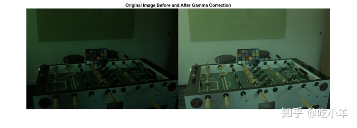
使用ColorChecker图表测量真实光源
使用场景中包含的X-Rite ColorChecker图表计算真实光源。该图表由24个具有已知光谱反射率的中性色块和彩色色块组成。
使用该colorChecker函数在经过伽玛校正的图像中检测图表。线性RGB图像太暗，colorChecker无法自动检测图表。
chart_sRGB = colorChecker(A_sRGB);
确认已正确检测到图表。
displayChart(chart_sRGB)
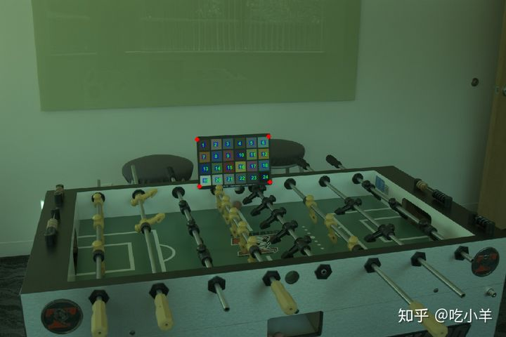
获取图表四个角处的注册点坐标。
registrationPoints = chart_sRGB.RegistrationPoints;
从线性RGB数据创建一个新的colorChecker对象。使用注册点的坐标指定图表的位置。
chart = colorChecker(A,"RegistrationPoints",registrationPoints);
使用measureColor函数测量所有色块的RGB值。
colors = measureColor(chart)
colors=24×9 table
ROI Color Measured_R Measured_G Measured_B Reference_L Reference_a Reference_b Delta_E
___ ________________ __________ __________ __________ ___________ ___________ ___________ _______
1 {'DarkSkin' } 1773 2284 1106 37.54 14.37 14.92 40.763
2 {'LightSkin' } 5691 7627 4245 64.66 19.27 17.5 61.046
3 {'BlueSky' } 1919 5214 4677 49.32 -3.82 -22.54 49.222
4 {'Foliage' } 1576 3376 1216 43.46 -12.74 22.72 46.172
5 {'BlueFlower' } 2997 6253 5997 54.94 9.61 -24.79 55.312
6 {'BluishGreen' } 3676 12020 7388 70.48 -32.26 -0.37 56.895
7 {'Orange' } 6250 5276 1213 62.73 35.83 56.5 82.432
8 {'PurplishBlue'} 1226 3779 5302 39.43 10.75 -45.17 55.714
9 {'ModerateRed' } 4581 3277 2074 50.57 48.64 16.67 67.971
10 {'Purple' } 1233 1767 1889 30.1 22.54 -20.87 41.882
11 {'YellowGreen' } 4939 10555 2657 71.77 -24.13 58.19 72.055
12 {'OrangeYellow'} 7410 8522 1608 71.51 18.24 67.37 83.134
13 {'Blue' } 567 2300 3888 28.37 15.42 -49.8 55.878
14 {'Green' } 2087 6486 2278 54.38 -39.72 32.27 61.962
15 {'Red' } 3702 1986 968 42.43 51.05 28.62 68.861
16 {'Yellow' } 8906 12782 2422 81.8 2.67 80.41 87.375
⋮
要测量真实光源，请仅使用图表底部一行的6个中性色块。提取底行的六个中性（消色差）色块的RGB值。
grayPatchRGB = colors{19:end,{'Measured_R','Measured_G','Measured_B'}};
grayPatchRGB = im2double(grayPatchRGB);
真实光源是中性色块的平均颜色。
illuminant_groundtruth = mean(grayPatchRGB)
illuminant_groundtruth = 1×3
0.0693 0.1423 0.0943
创建ColorChecker图表的掩模
测试AWB算法时，请通过屏蔽图表来防止算法不公平地利用图表。
使用drawpolygon函数在图表上创建多边形ROI 。指定多边形的顶点作为注册点。。
chartROI = drawpolygon("Position",registrationPoints);
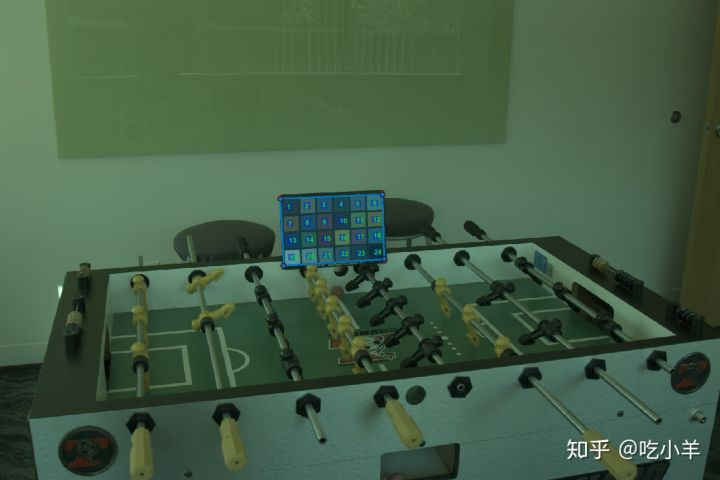
使用createMask函数将多边形ROI转换为二进制掩模。
mask_chart = createMask(chartROI);
翻转掩模。图表中的像素不包括在掩模中，其余场景的像素包括在掩模中。
mask_scene = ~mask_chart;
要确认掩模的准确性，请在图像上显示掩模。掩模中包含的像素具有蓝色。
imshow(labeloverlay(A_sRGB,mask_scene));
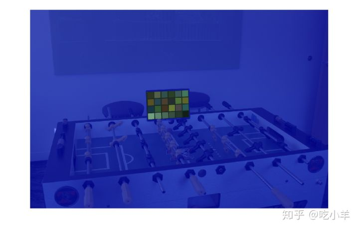
角度误差
您可以将发光体视为3-D RGB颜色空间中的向量。估计的光源的大小与其方向相比不太紧要，因为光源的方向就是用来对图像进行白平衡的方向。
要评估估计的光源的质量，请计算估计光源和真实光源之间的角度误差。角误差是两个向量形成的角度（以度为单位）。角度误差越小，估计越好。
为了更好地理解角度误差的概念，请考虑以下对任意光源的可视化以及使用ColorChecker图表测量的真实值。该plotColorAngle辅助函数绘制在3-d RGB颜色空间中的发光体的单位矢量，而在实施例的底部限定。
sample_illuminant = [0.066 0.1262 0.0691];
p = plot3([0 1],[0 1],[0,1],'LineStyle',':','Color','k');
ax = p.Parent;
hold on
plotColorAngle(illuminant_groundtruth,ax)
plotColorAngle(sample_illuminant,ax)
title('Illuminants in RGB space')
view(28,36)
legend('Achromatic Line','Ground Truth Illuminant','Sample Illuminant')
grid on
axis equal
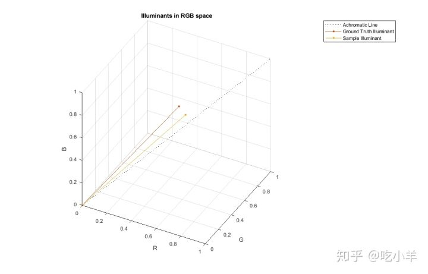
White Patch Retinex算法
用于光源估计的White Patch Retinex算法假定场景包含明亮的消色差色块。该色块反射每个色带可能的最大光线，这是场景光源的颜色。使用该illumwhite函数可通过White Patch Retinex算法估算照明度。
包括所有场景像素
使用场景中的所有像素估算光源。通过使用“'Mask'名称/值”对参数从场景中排除ColorChecker图表。
percentileToExclude = 0; illuminant_wp1 = illumwhite(A,percentileToExclude,'Mask',mask_scene);
计算用White Patch Retinex估算的光源的角度误差。
err_wp1 = colorangle(illuminant_wp1, illuminant_groundtruth); disp(['Angular error for White Patch with percentile=0: ' num2str(err_wp1)]) Angular error for White Patch with percentile=0: 16.5377
使用chromadapt函数对图像进行白平衡。指定估计的光源，并指示颜色值在线性RGB颜色空间中。
B_wp1 = chromadapt(A,illuminant_wp1,'ColorSpace','linear-rgb');
显示经过伽玛校正的白平衡图像。
B_wp1_sRGB = lin2rgb(B_wp1);
figure
imshow(B_wp1_sRGB)
title('White-Balanced Image using White Patch Retinex with percentile=0')
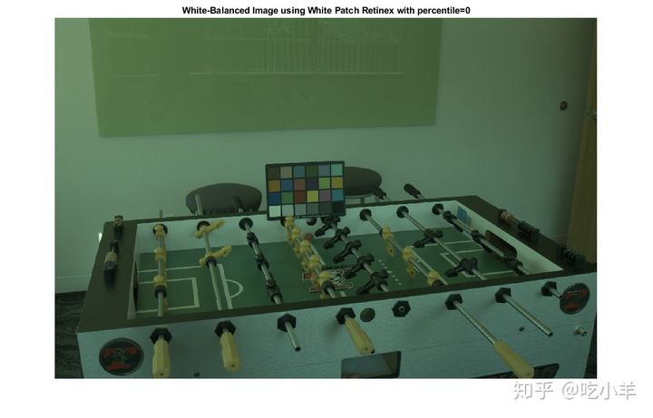
排除最亮的像素
当像素曝光过度时，White Patch Retinex算法的效果不佳。为了提高算法的性能，请排除前1％的最亮像素。
percentileToExclude = 1; illuminant_wp2 = illumwhite(A,percentileToExclude,'Mask',mask_scene);
计算估计的光源的角度误差。误差小于使用所有像素估算光源时的误差。
err_wp2 = colorangle(illuminant_wp2,illuminant_groundtruth); disp(['Angular error for White Patch with percentile=1: ' num2str(err_wp2)]) Angular error for White Patch with percentile=1: 5.032
使用估计的光源对线性RGB颜色空间中的图像进行白平衡。
B_wp2 = chromadapt(A,illuminant_wp2,'ColorSpace','linear-rgb');
用新的光源显示经过伽马校正的白平衡图像。
B_wp2_sRGB = lin2rgb(B_wp2);
imshow(B_wp2_sRGB)
title('White-Balanced Image using White Patch Retinex with percentile=1')
 Gray World算法
Gray World算法
用于照明估计的“Gray World”算法假定该图片的平均颜色为灰色或无色。因此，它将场景光源计算为图像中的平均RGB值。使用此illumgray函数可以使用Gray World算法估算照明度。 包括所有场景像素
首先，使用图像的所有像素（与ColorChecker图表对应的像素除外）估算场景光源。illumgray函数提供了一个参数，用于指定要排除的最大和最小值的百分位数（按亮度排序）。在这里，将百分位数指定为0。
percentileToExclude = 0; illuminant_gw1 = illumgray(A,percentileToExclude,'Mask',mask_scene);
计算估计的光源和真实光源之间的角度误差。
err_gw1 = colorangle(illuminant_gw1,illuminant_groundtruth); disp(['Angular error for Gray World with percentiles=[0 0]: ' num2str(err_gw1)]) Angular error for Gray World with percentiles=[0 0]: 5.0414
使用估计的光源对线性RGB颜色空间中的图像进行白平衡。
B_gw1 = chromadapt(A,illuminant_gw1,'ColorSpace','linear-rgb');
显示经过伽玛校正的白平衡图像。
B_gw1_sRGB = lin2rgb(B_gw1);
imshow(B_gw1_sRGB)
title('White-Balanced Image using Gray World with percentiles=[0 0]')
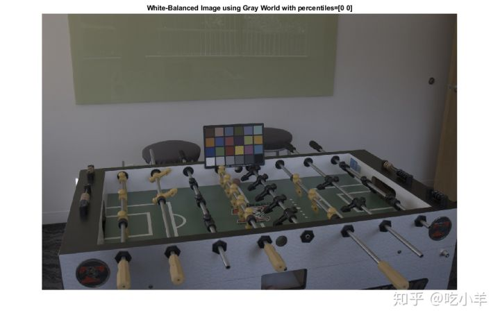 排除最亮和最暗的像素
当像素曝光不足或曝光过度时，Gray World算法的效果不佳。为了提高算法的性能，请排除前1％最暗和最亮的像素。
percentileToExclude = 1; illuminant_gw2 = illumgray(A,percentileToExclude,'Mask',mask_scene);
计算估计的光源的角度误差。误差小于使用所有像素估算光源时的误差。
err_gw2 = colorangle(illuminant_gw2, illuminant_groundtruth); disp(['Angular error for Gray World with percentiles=[1 1]: ' num2str(err_gw2)]) Angular error for Gray World with percentiles=[1 1]: 5.1092
使用估计的光源对线性RGB颜色空间中的图像进行白平衡。
B_gw2 = chromadapt(A,illuminant_gw2,'ColorSpace','linear-rgb');
用新的光源显示经过伽马校正的白平衡图像。
B_gw2_sRGB = lin2rgb(B_gw2);
imshow(B_gw2_sRGB)
title('White-Balanced Image using Gray World with percentiles=[1 1]')
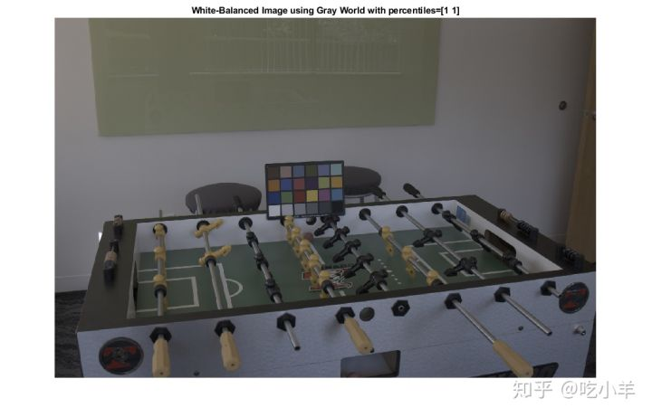 Cheng's PCA算法
Cheng的光源估计方法从诸如Gray Edge [4]之类的空间域方法中汲取了灵感，该方法假设图像的梯度是消色差的。他们表明，可以通过对图像块进行混洗，通过人为地引入强梯度来改善Gray Edge，并得出结论，最强梯度遵循光源的方向。他们的方法包括按照像素在平均图像颜色方向上的投影范数对像素进行排序，并保留最大和最小百分位数。这两组对应于图像中的强梯度。最后，他们对保留的像素执行主成分分析（PCA），并返回第一个成分作为估计的光源。 使用Cheng's PCA算法，用illumpca函数估算照明度。 包括默认的最大和最小3.5％的像素
首先，使用Cheng's PCA方法的默认百分比值估算光源，不包括与ColorChecker图表对应的光源。
illuminant_ch2 = illumpca(A,'Mask',mask_scene);
计算估计的光源和真实光源之间的角度误差。
err_ch2 = colorangle(illuminant_ch2,illuminant_groundtruth); disp(['Angular error for Cheng with percentage=3.5: ' num2str(err_ch2)]) Angular error for Cheng with percentage=3.5: 5.0159
使用估计的光源对线性RGB颜色空间中的图像进行白平衡。
B_ch2 = chromadapt(A,illuminant_ch2,'ColorSpace','linear-rgb');
显示经过伽玛校正的白平衡图像。
B_ch2_sRGB = lin2rgb(B_ch2);
imshow(B_ch2_sRGB)
title('White-Balanced Image using Cheng with percentile=3.5')
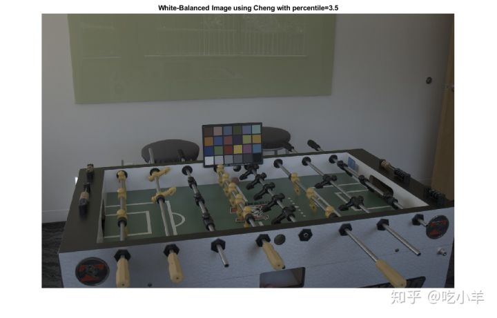 包括最大和最小5％的像素
现在，使用沿平均颜色方向的最大和最小5％的像素来估计场景光源。illumpca函数的第二个参数指定要排除的最大值和最小值的百分位数（按亮度排序）。
illuminant_ch1 = illumpca(A,5,'Mask',mask_scene);
计算估计的光源和真实光源之间的角度误差。误差小于使用默认百分比估算光源时的误差。
err_ch1 = colorangle(illuminant_ch1, illuminant_groundtruth); disp(['Angular error for Cheng with percentage=5: ' num2str(err_ch1)]) Angular error for Cheng with percentage=5: 4.7451
使用估计的光源对线性RGB颜色空间中的图像进行白平衡。
B_ch1 = chromadapt(A,illuminant_ch1,'ColorSpace','linear-rgb');
显示经过伽玛校正的白平衡图像。
B_ch1_sRGB = lin2rgb(B_ch1);
imshow(B_ch1_sRGB)
title('White-Balanced Image using Cheng with percentage=5')
查找最佳参数
为了找到用于每种算法的最佳参数，您可以扫描一个范围并计算每个算法的角度误差。三种算法的参数含义不同，但是这些参数的范围相似，因此可以很容易地以编程方式为每种算法搜索最佳参数。
param_range = 0:0.25:5;
err = zeros(numel(param_range),3);
for k = 1:numel(param_range)
% White Patch
illuminant_wp = illumwhite(A,param_range(k),'Mask',mask_scene);
err(k,1) = colorangle(illuminant_wp,illuminant_groundtruth);
% Gray World
illuminant_gw = illumgray(A,param_range(k),'Mask',mask_scene);
err(k,2) = colorangle(illuminant_gw,illuminant_groundtruth);
% Cheng
if (param_range(k) ~= 0)
illuminant_ch = illumpca(A,param_range(k),'Mask',mask_scene);
err(k,3) = colorangle(illuminant_ch,illuminant_groundtruth);
else
% Cheng's algorithm is undefined for percentage=0.
err(k,3) = NaN;
end
end
使用函数heatmap显示角度误差的热图。深蓝色表示低角度误差，而黄色表示高角度误差。最佳参数具有最小的角度误差。
heatmap(err,'Title','Angular Error','Colormap',parula(length(param_range)), ...
'XData',["White Patch" "Gray World" "Cheng's PCA"], ...
'YLabel','Parameter Value','YData',string(param_range));
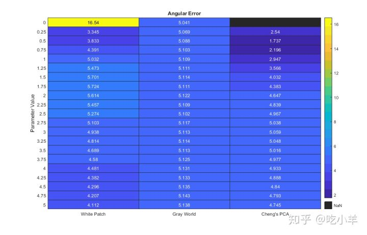
找到每种算法的最佳参数。
[~,idx_best] = min(err);
best_param_wp = param_range(idx_best(1));
best_param_gw = param_range(idx_best(2));
best_param_ch = param_range(idx_best(3));
fprintf('The best parameter for White Patch is %1.2f with angular error %1.2f degrees\n', ...
best_param_wp,err(idx_best(1),1));
The best parameter for White Patch is 0.25 with angular error 3.35 degrees
fprintf('The best parameter for Gray World is %1.2f with angular error %1.2f degrees\n', ...
best_param_gw,err(idx_best(2),2));
The best parameter for Gray World is 0.00 with angular error 5.04 degrees
fprintf('The best parameter for Cheng is %1.2f with angular error %1.2f degrees\n', ...
best_param_ch,err(idx_best(3),3));
The best parameter for Cheng is 0.50 with angular error 1.74 degrees
使用最佳参数计算每种算法的估计光源。
best_illum_wp = illumwhite(A,best_param_wp,'Mask',mask_scene); best_illum_gw = illumgray(A,best_param_gw,'Mask',mask_scene); best_illum_ch = illumpca(A,best_param_ch,'Mask',mask_scene);
显示RGB颜色空间中每个最佳光源的角度误差。
p = plot3([0 1],[0 1],[0,1],'LineStyle',':','Color','k');
ax = p.Parent;
hold on
plotColorAngle(illuminant_groundtruth,ax)
plotColorAngle(best_illum_wp,ax)
plotColorAngle(best_illum_gw,ax)
plotColorAngle(best_illum_ch,ax)
title('Best Illuminants in RGB space')
view(28,36)
legend('Achromatic Line','Ground Truth','White Patch','Gray World','Cheng')
grid on
axis equal
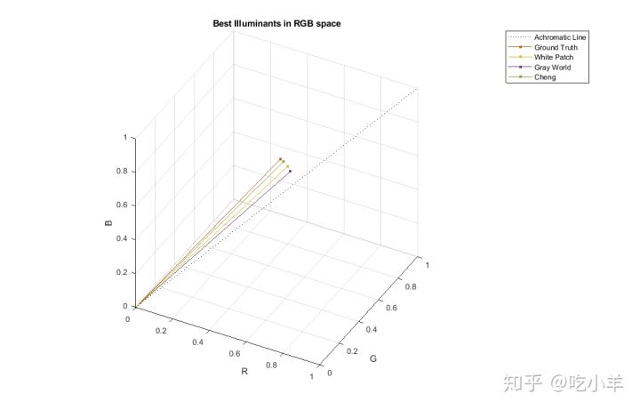
使用最佳光源为每种算法计算最佳白平衡图像。
B_wp_best = chromadapt(A,best_illum_wp,'ColorSpace','linear-rgb'); B_wp_best_sRGB = lin2rgb(B_wp_best); B_gw_best = chromadapt(A,best_illum_gw,'ColorSpace','linear-rgb'); B_gw_best_sRGB = lin2rgb(B_gw_best); B_ch_best = chromadapt(A,best_illum_ch,'ColorSpace','linear-rgb'); B_ch_best_sRGB = lin2rgb(B_ch_best);
以蒙太奇形式显示每种算法的最佳白平衡图像。
figure
montage({B_wp_best_sRGB,B_gw_best_sRGB,B_ch_best_sRGB},'Size',[1 3])
title('Montage of Best White-Balanced Images: White Point, Gray World, Cheng')
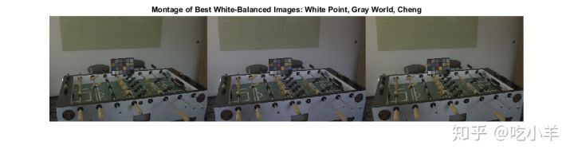 结论
在对两种经典的光源估计算法以及一种最新的算法的比较表明，Cheng的方法（使用最大和最小的0.75％最暗和最亮像素）对特定图像可以胜出。然而，这个结果应该是有保留的。
首先，使用ColorChecker图表测量真实光源，并且该光源对镜头和传感器噪声敏感。使用分光光度计可以更好地估计真实光源。
其次，真实光源被估计为中性色块的平均颜色。通常使用中位数而不是均值，这可能会使基本事实发生重大变化。例如，对于本研究中的图像，使用相同的像素，中性色块的中间颜色和平均颜色相差0.5度，在某些情况下，该值可能大于通过不同算法估算的光源的角度误差。
第三，光源估计算法的全面比较应使用在不同条件下拍摄的各种图像。对于特定的图像，一种算法可能比其他算法更好，但是在整个数据集上的效果可能会很差。
配套函数
plotColorAngle函数在3-D RGB颜色空间中绘制光源的单位矢量。输入参数illum指定光源为RGB颜色，输入参数ax指定绘制单位矢量的轴。
function plotColorAngle(illum,ax)
R = illum(1);
G = illum(2);
B = illum(3);
magRGB = norm(illum);
plot3([0 R/magRGB],[0 G/magRGB],[0 B/magRGB], ...
'Marker','.','MarkerSize',10,'Parent',ax)
xlabel('R')
ylabel('G')
zlabel('B')
xlim([0 1])
ylim([0 1])
zlim([0 1])
end
参考文献
[1] Ebner, Marc. White Patch Retinex, Color Constancy. John Wiley & Sons, 2007. ISBN 978-0-470-05829-9.
[2] Ebner, Marc. The Gray World Assumption, Color Constancy. John Wiley & Sons, 2007. ISBN 978-0-470-05829-9.
[3] Cheng, Dongliang, Dilip K. Prasad, and Michael S. Brown. "Illuminant estimation for color constancy: why spatial-domain methods work and the role of the color distribution." JOSA A 31.5 (2014): 1049-1058.
[4] Van De Weijer, Joost, Theo Gevers, and Arjan Gijsenij. "Edge-based color constancy." IEEE Transactions on image processing 16.9 (2007): 2207-2214.
======================================================================
我的测试结果及程序
下面是我测试的代码：

注：本文根据MATLAB官网内容修改而成。